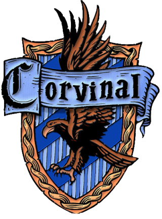

BEM VINDO A CASA CORVINAL!
""Ou será a velha e sábia Corvinal,
A casa dos que têm a mente sempre alerta,
Onde os homens de grande espírito e saber
Sempre encontrarão companheiros seus iguais.""
— O Chapéu Seletor
A Corvinal, fundada por Rowena Ravenclaw, é uma das quatro casas da Escola de Magia e Bruxaria de Hogwarts.
Seus membros, comumente, são caracterizados por sua inteligência, aprendizado e sabedoria.
Suas cores são o azul e bronze, o animal emblemático é uma águia e sua fantasma patrono é a Dama Cinzenta.
A casa possui um diretor notável, o Mestre de Feitiços Fílio Flitwick.
